News
- EB-JEPA received the Outstanding Paper Award at the ICLR 2026 World Models Workshop.
- Navigation World Models won the Best Paper Honorable Mention at CVPR 2025.
- I was a guest on the RoboPapers podcast where I talked about Navigation World Models.
- I was a guest on the TWIML AI podcast where I talked about my recent research.
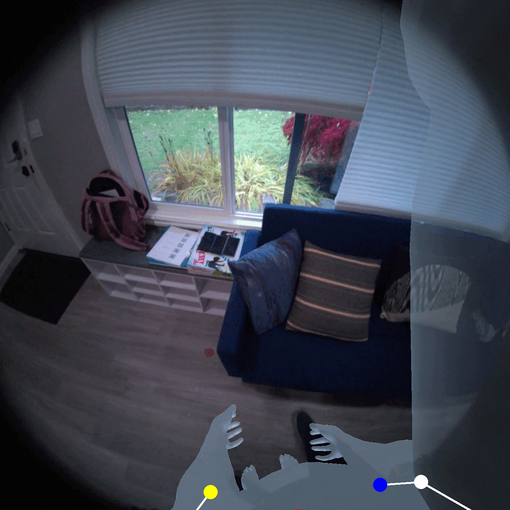
Lifting Embodied World Models for Planning and Control
Alex N. Wang, Trevor Darrell, Pavel Izmailov, Yutong Bai, Amir Bar
arXiv, 2026
A lightweight policy lifts high-level waypoint commands into low-level joint actions, enabling efficient planning and control in embodied world models.
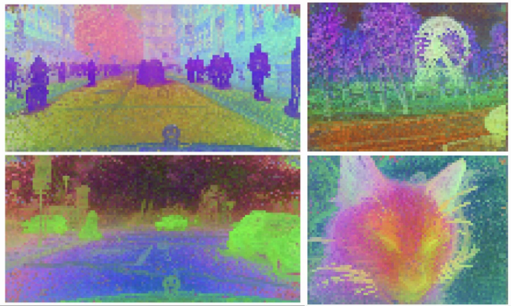
V-JEPA 2.1: Unlocking Dense Features in Video Self-Supervised Learning
Lorenzo Mur-Labadia, Matthew Muckley, Amir Bar, Mido Assran, Koustuv Sinha, Mike Rabbat, Yann LeCun, Nicolas Ballas, Adrien Bardes
arXiv, 2026
A dense predictive loss with hierarchical supervision and unified image-video training yields state-of-the-art video self-supervised representations.
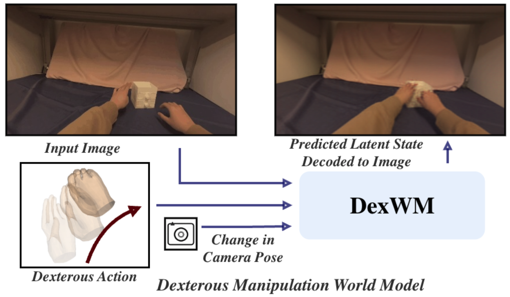
World Models Can Leverage Human Videos for Dexterous Manipulation
Raktim Goswami, Amir Bar, David Fan, Tsung-Yen Yang, Gaoyue Zhou, Prashanth Krishnamurthy, Michael Rabbat, Farshad Khorrami, Yann LeCun
arXiv, 2025
Project Page
World models trained on human videos enable dexterous robot manipulation.
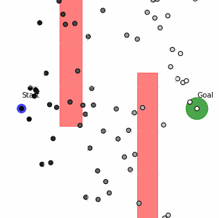
Parallel Stochastic Gradient-Based Planning for World Models
Michael Psenka, Michael Rabbat, Aditi Krishnapriyan, Yann LeCun, Amir Bar
ICML, 2026
GRASP, a parallelizable gradient-based planner that exploits world-model differentiability with stochastic exploration for long-horizon visual control.
A Lightweight Library for Energy-Based Joint-Embedding Predictive Architectures
Basile Terver, Randall Balestriero, Megi Dervishi, David Fan, Quentin Garrido, Tushar Nagarajan, Koustuv Sinha, Wancong Zhang, Mike Rabbat, Yann LeCun*, Amir Bar*
ICLR World Models Workshop, 2026 [Outstanding Paper Award]
Code
An open-source library for learning world models in representation space — runnable on a single GPU.
From Generated Human Videos to Physically Plausible Robot Trajectories
James Ni*, Zekai Wang*, Wei Lin*, Amir Bar*, Trevor Darrell†, Yann LeCun†, Jitendra Malik†, Roei Herzig†
CVPR, 2026 [Findings]
Project Page
Generating human videos to control humanoid motion.
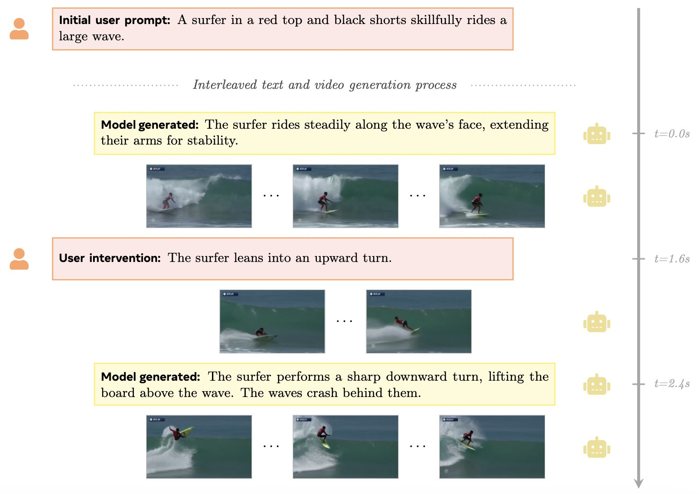
TV2TV: A Unified Framework for Interleaved Language and Video Generation
Xiaochuang Han, Youssef Emad, Melissa Hall, John Nguyen, Karthik Padthe, Liam Robbins, Amir Bar, Delong Chen, Michal Drozdzal, Maha Elbayad, Yushi Hu, Shang-Wen Li, Sreya Dutta Roy, Jakob Verbeek, XuDong Wang, Marjan Ghazvininejad, Luke Zettlemoyer, Emily Dinan
CVPR, 2026
A unified framework for interleaved text and video generation. This allows the model to "think in words" before "acting in pixels".
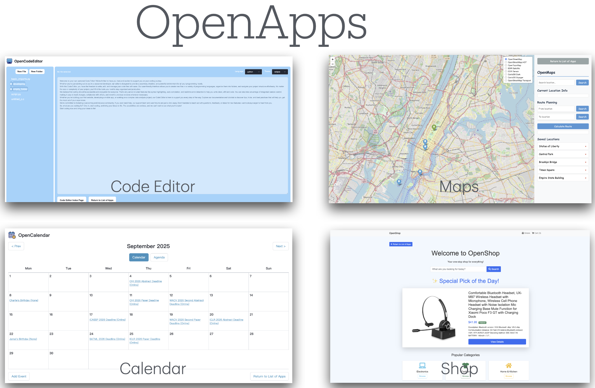
OpenApps: Simulating Environment Variations to Measure UI-Agent Reliability
Karen Ullrich, Jingtong Su, Claudia Shi, Arjun Subramonian, Amir Bar, Ivan Evtimov, Nikolaos Tsilivis, Randall Balestriero, Julia Kempe, Mark Ibrahim
ICLR, 2026 [Oral]
Project Page
A benchmark for webagents, measuring reliability across environment variations.
Whole-Body Conditioned Egocentric Video Prediction
Yutong Bai*, Danny Tran*, Amir Bar*, Yann LeCun† , Trevor Darrell†, Jitendra Malik†
NeurIPS, 2025
Project Page
A world model for whole-body control.
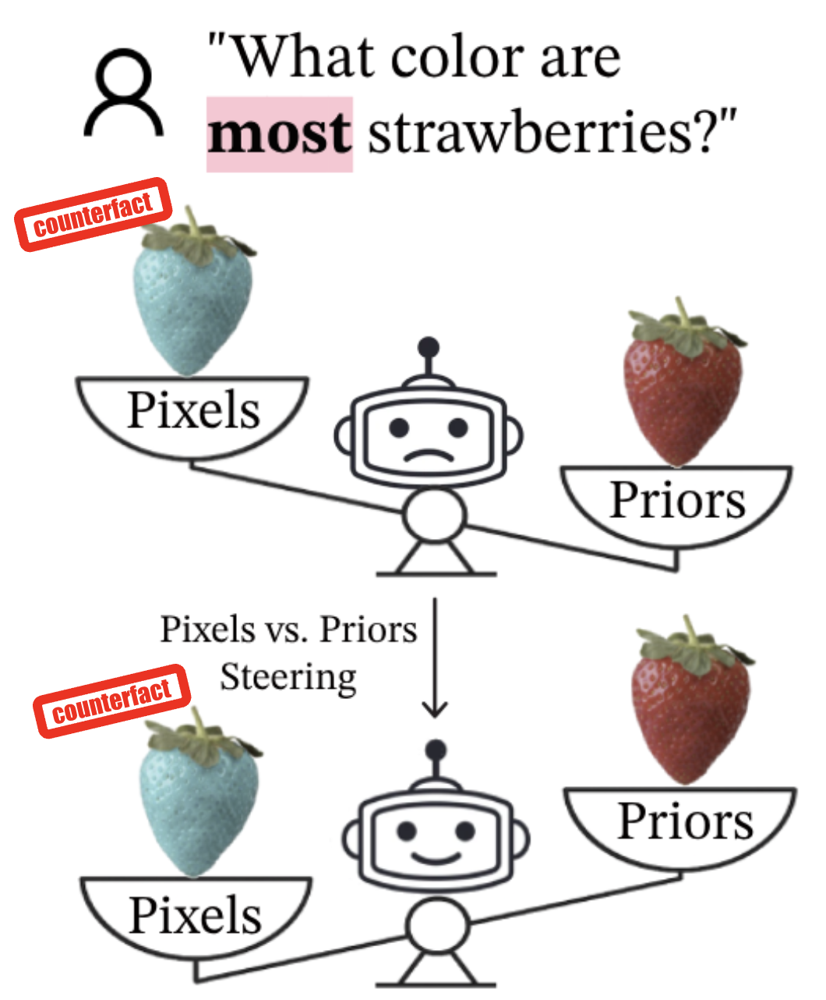
Pixels Versus Priors: Controlling Knowledge Priors in Vision-Language Models through Visual Counterfacts
Michal Golovanevsky*, William Rudman*, Michael Lepori, Amir Bar, Ritambhara Singh, Carsten Eickhoff
EMNLP, 2025
Code | Data

Scaling Language-Free Visual Representation Learning
David Fan*, Shengbang Tong*, Jiachen Zhu, Koustuv Sinha, Zhuang Liu, Xinlei Chen, Michael Rabbat, Nicolas Ballas, Yann LeCun, Amir Bar†, Saining Xie†
ICCV, 2025 [Highlight]
Project Page | Code | Model Weights
Vision-only models scale with model and data size, catching up with CLIP models without language supervision.
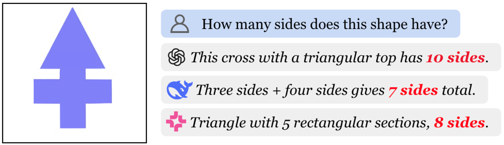
Forgotten Polygons: Multimodal Large Language Models are Shape-Blind
William Rudman*, Michal Golovanevsky*, Amir Bar, Vedant Palit, Yann LeCun, Carsten Eickhoff, Ritambhara Singh
ACL, 2025
Code
MLLMs struggle with understanding geometic primitives.
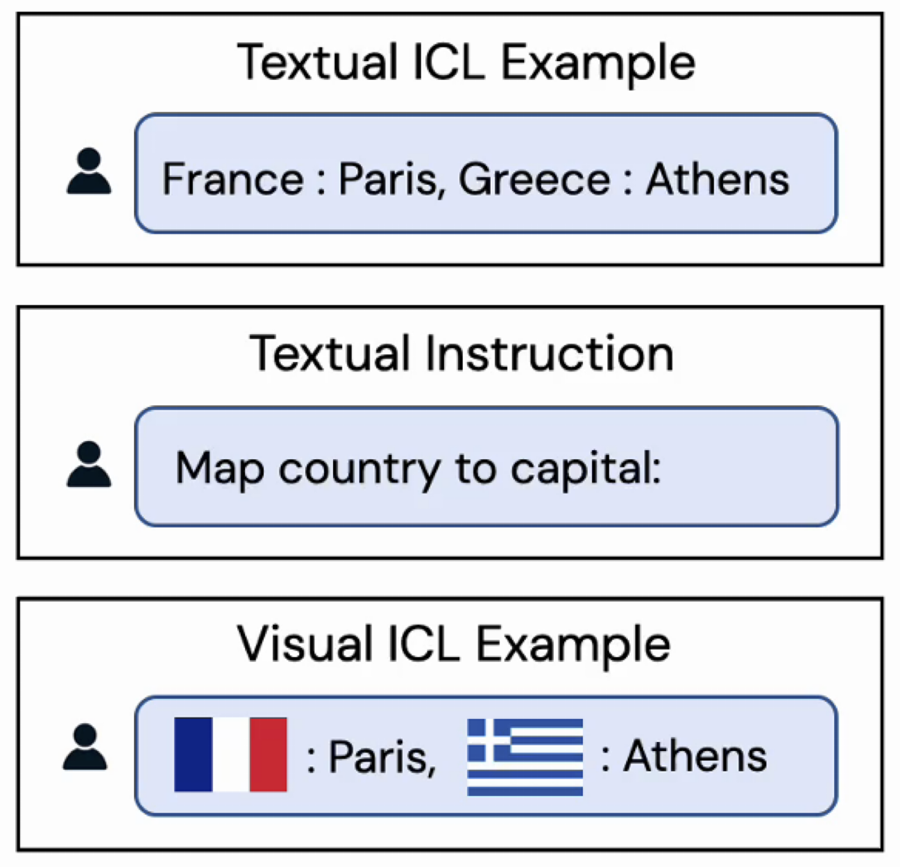
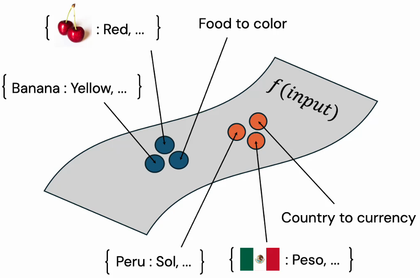
Vision-Language Models Create Cross-Modal Task Representations
Grace Luo, Trevor Darrell, Amir Bar
ICML, 2025
Project Page | Code
Vision-Language Models (VLMs) answer questions by mapping inputs to shared cross-modal task representations, an important inductive bias that helps explain VLM's success.
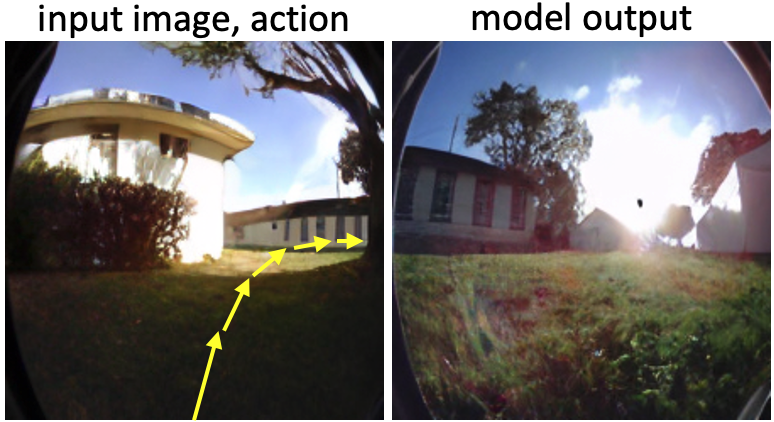
Navigation World Models
Amir Bar, Gaoyue Zhou, Danny Tran, Trevor Darrell, Yann LeCun
CVPR, 2025 [Best Paper Honorable Mention]
Project Page | Code | Models
Planning trajectories by simulating them using a video world model. Our conditional diffusion transformer (CDiT) generates videos that enable planning, counterfactual reasoning, and action.
EgoPet: Egomotion and Interaction Data from an Animal's Perspective
Amir Bar, Arya Bakhtiar, Danny Tran, Antonio Loquercio, Jathushan Rajasegaran, Yann LeCun, Amir Globerson, Trevor Darrell
ECCV, 2024
Project Page | Data | Code
We present EgoPet, a new egocentric video dataset of animals.
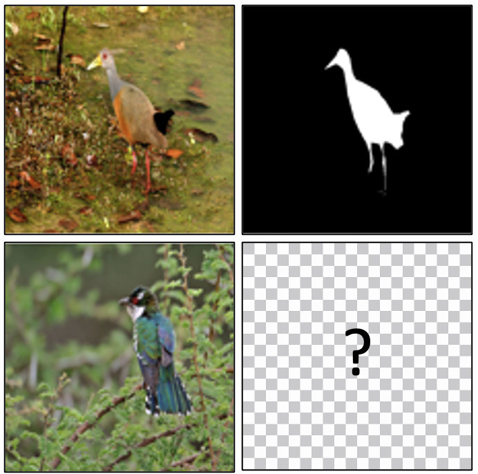
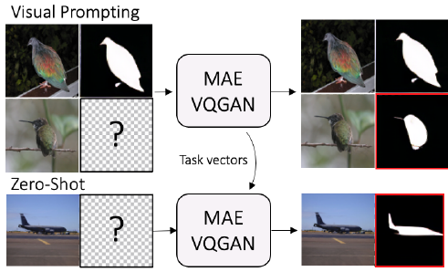
Finding Visual Task Vectors
Alberto Hojel, Yutong Bai, Trevor Darrell, Amir Globerson, Amir Bar
ECCV, 2024
Code
We discover Task Vectors, latent representations in a model's activation space that encode task information. We propose a method to find and use them to guide models for performing tasks.
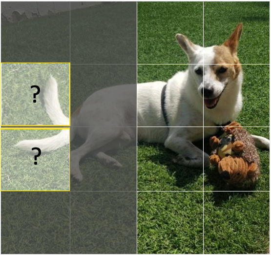
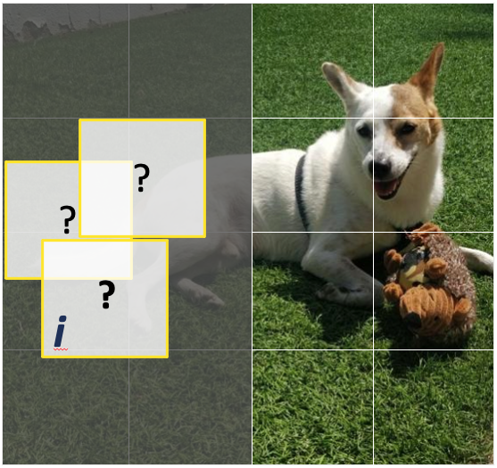
Stochastic Positional Embeddings Improve Masked Image Modeling
Amir Bar, Florian Bordes, Assaf Shocher, Mahmoud Assran, Pascal Vincent, Nicolas Ballas, Trevor Darrell, Amir Globerson, Yann LeCun
ICML, 2024
Code
Modeling location uncertainties via stochastic positional embeddings (StoP) improves masked image modeling.
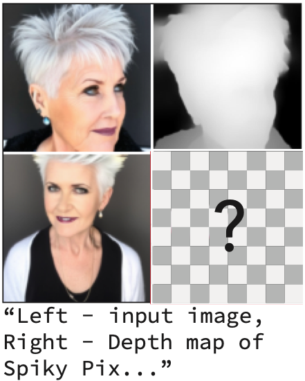
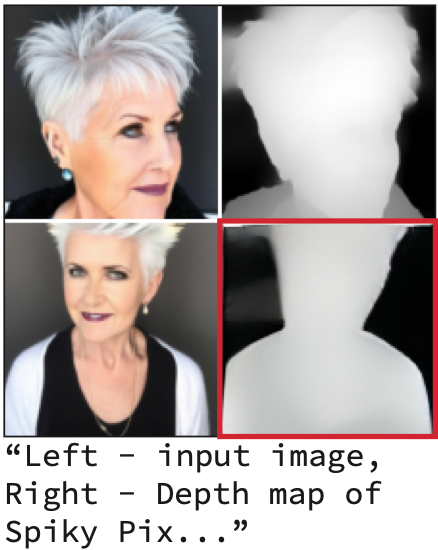
IMProv: Inpainting-based Multimodal Prompting for Computer Vision Tasks
Jiarui Xu, Yossi Gandelsman, Amir Bar, Jianwei Yang, Jianfeng Gao, Trevor Darrell, Xiaolong Wang
TMLR, 2024
Project Page | Code/Data | Demo
IMProv performs multimodal in-context learning to solve computer vision tasks.
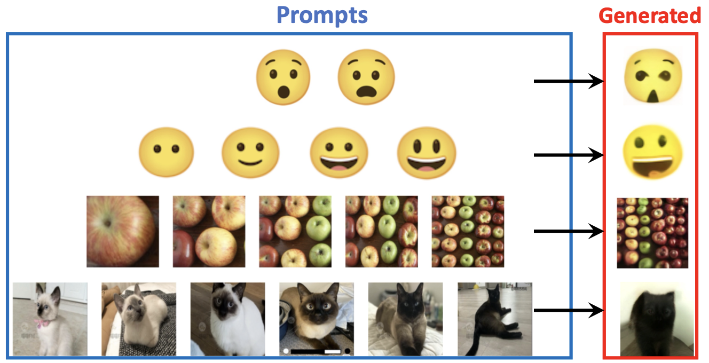
Sequential Modeling Enables Scalable Learning for Large Vision Models
Yutong Bai, Xinyang Geng, Karttikeya Mangalam, Amir Bar, Alan Yuille, Trevor Darrell, Jitendra Malik, Alexei A Efros
CVPR, 2024
Project Page | Code
Large Vision Model trained on 420B tokens; exhibits interesting in-context learning capabilities.
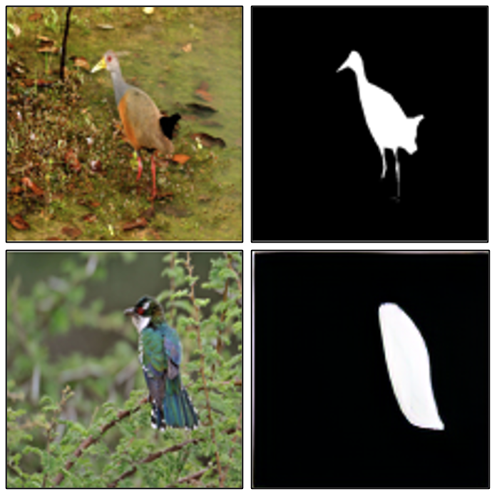
Visual Prompting via Image Inpainting
Amir Bar*, Yossi Gandelsman*, Trevor Darrell, Amir Globerson, Alexei A. Efros
NeurIPS, 2022
Project Page | Code/Data
Adapt a pre-trained visual model to novel downstream tasks without task-specific fine-tuning or any model modification.
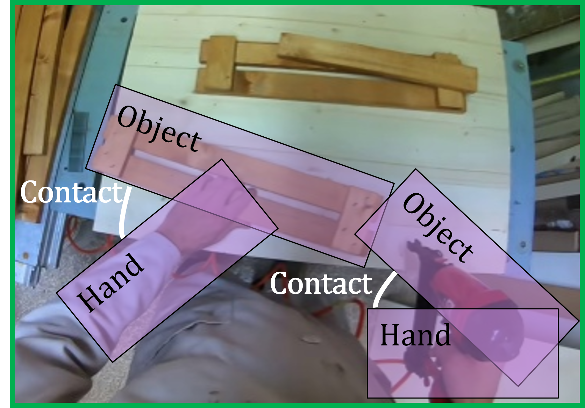
Bringing Image Scene Structure to Video via Frame-Clip Consistency of Object Tokens
Elad Ben-Avraham, Roei Herzig, Karttikeya Mangalam, Amir Bar, Anna Rohrbach, Leonid Karlinsky, Trevor Darrell, Amir Globerson
NeurIPS, 2022
Project Page | Code
Incorporating image-level scene structure during training improves video transformers.
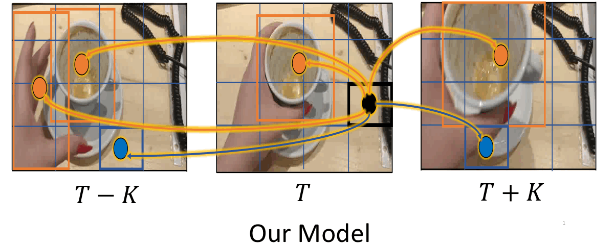
Object-Region Video Transformers
Roei Herzig, Elad Ben-Avraham, Karttikeya Mangalam, Amir Bar, Gal Chechik, Anna Rohrbach, Trevor Darrell, Amir Globerson
CVPR, 2022
Project Page | Code
Incorporating objects into transformer layers improves video transformers.
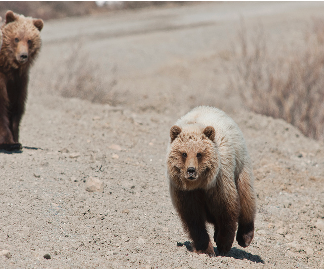
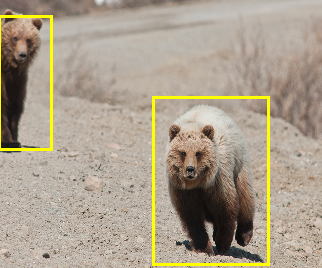
DETReg: Unsupervised Pretraining with Region Priors for Object Detection
Amir Bar, Xin Wang, Vadim Kantorov, Colorado J Reed, Roei Herzig, Gal Chechik, Anna Rohrbach, Trevor Darrell, Amir Globerson
CVPR, 2022
Project Page | Code | Video | Demo
Pretraining transformers to localize potential objects improves object detection.
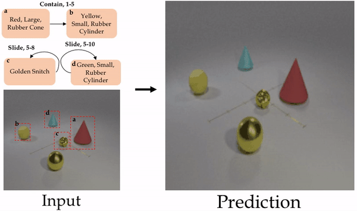
Compositional Video Synthesis with Action Graphs
Amir Bar*, Roei Herzig*, Xiaolong Wang, Anna Rohrbach, Gal Chechik, Trevor Darrell, Amir Globerson
ICML, 2021
Project Page | Code | Video
We introduce Action Graphs, a structure that can better capture the compositional and hierarchical nature of actions.
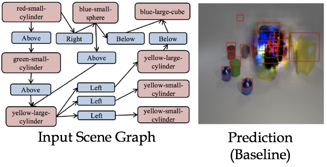
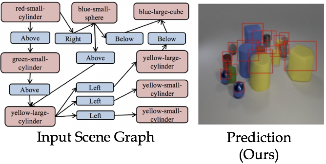
Learning Canonical Representations for Scene Graph to Image Generation
Roei Herzig*, Amir Bar*, Huijuan Xu, Gal Chechik, Trevor Darrell, Amir Globerson
ECCV, 2020
Project Page | Code | Video
We present a model for Scene Graph to Image generation which is more robust to complex input scene graphs.

Learning Individual Styles of Conversational Gesture
Shiry Ginosar*, Amir Bar*, Gefen Kohavi, Caroline Chan, Andrew Owens, Jitendra Malik
CVPR, 2019
Project Page | Code | Data
We predict plausible gestures to go along with someone's speech.
Sample:
The man allowed that about health captain played that alleged to Marks live up in the club comes the handed up moved to a brief
Language Generation with Recurrent Generative Adversarial Networks without Pre-training
Ofir Press*, Amir Bar*, Ben Bogin*, Jonathan Berant, Lior Wolf
1st Workshop on Learning to Generate Natural Language at ICML, 2017
Code
We show that recurrent neural networks can be trained to generate text with GANs from scratch and vastly improve the quality of generated sequences compared to a convolutional baseline.
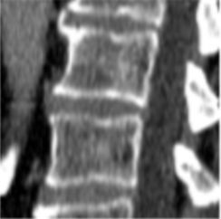
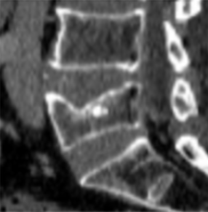
3D Convolutional Sequence to Sequence Model for Vertebral Compression Fractures Identification in CT
David Chettrit, Tomer Meir, Hila Lebel, Mila Orlovsky, Ronen Gordon, Ayelet Akselrod-Ballin, Amir Bar
MICCAI, 2020
Press: 1, 2
We present a novel architecture used to detect vertebral compression fractures in Chest and Abdomen CT.
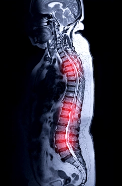
Automated Opportunistic Osteoporotic Fracture Risk Assessment Using Computed Tomography Scans to Aid in FRAX Underutilization
Noa Dagan, Eldad Elnekave, Noam Barda, Orna Bregman-Amitai, Amir Bar, Mila Orlovsky, Eitan Bachmat, Ran D. Balicer
Nature Medicine, 2020
Press: 1, 2
We demonstrate it is feasible to automatically evaluate risk based on routine abdomen or chest computed tomography (CT) scans.
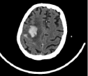
Improved ICH Classification Using Task-Dependent Learning
Amir Bar, Michal Mauda-Havakuk, Yoni Turner, Michal Safadi, Eldad Elnekave
ISBI, 2019
Press
Intracranial hemorrhage (ICH) is among the most critical and time-sensitive findings to be detected on Head CT. We present a new architecture designed for optimal triaging of Head CTs, with the goal of decreasing the time from CT acquisition to accurate ICH detection.
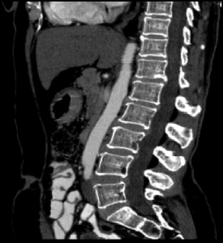
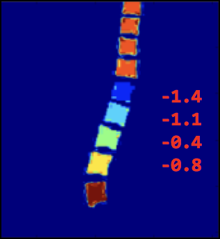
Simulating Dual-Energy X-Ray Absorptiometry in CT Using Deep-Learning Segmentation Cascade
Arun Krishnaraj, Spencer Barrett, Orna Bregman-Amitai, Michael Cohen-Sfady, Amir Bar, David Chettrit, Mila Orlovsky, Eldad Elnekave
Journal of the American College of Radiology, 2019
Osteoporosis is an underdiagnosed condition despite effective screening modalities. This study describes a method to simulate lumbar DEXA scores from routine CT studies using a machine-learning algorithm.
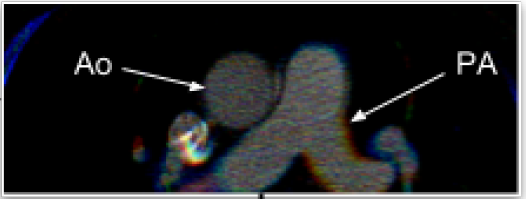
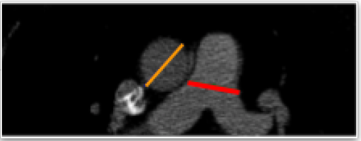
PHT-bot: A Deep Learning-Based System for Automatic Risk Stratification of COPD Patients Based Upon Signs of Pulmonary Hypertension
David Chettrit, Orna Bregman Amitai, Itamar Tamir, Amir Bar, and Eldad Elnekave
SPIE, 2019
Chronic Obstructive Pulmonary Disease (COPD) is a leading cause of morbidity and mortality worldwide. We applied a deep learning algorithm to detect those at risk.
Compression Fractures Detection on CT
Amir Bar, Lior Wolf, Orna Bregman Amitai, Eyal Toledano, Eldad Elnekave
SPIE, 2017
Press: 1, 2
The presence of a vertebral compression fracture is highly indicative of osteoporosis and represents the single most robust predictor for development of a second osteoporotic fracture. We present an automated method for detecting spine compression fractures in CT scans.
Patents
- Systems and methods for automated detection of visual objects in medical images. US Patent 11,776,243
- Cross modality training of machine learning models. US Patent 11,587,228
- Identification of a contrast phase depicted in a medical image. US Patent 11,727,087
Undergraduate and MA Collaborators
If you are a student interested in collaborating on research projects or looking for advice, please reach out.
- Danny Tran, now incoming PhD at UT Austin.
- Alberto Hojel, now founder and CEO at Lucid Simulations.
- Arya Bakhtiar, now MA at Stanford
- Dantong Niu, now PhD at UC Berkeley
- Elad Ben-Avraham, now at Amazon